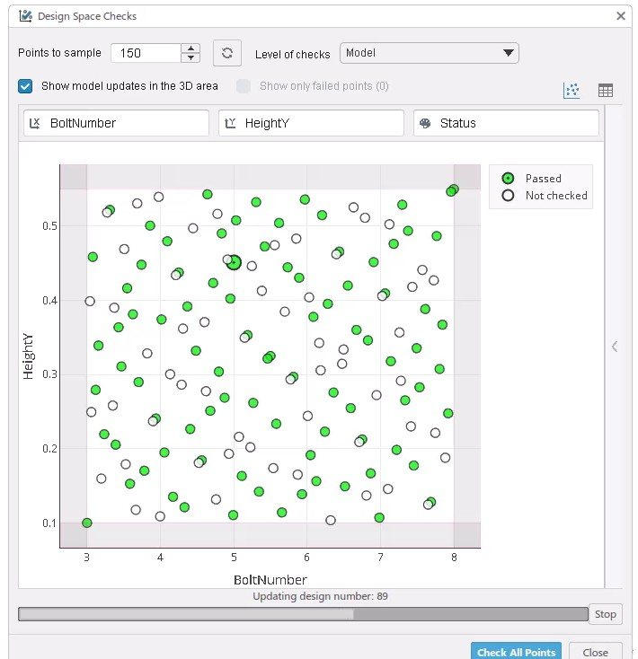

← All projects
Dassault Systèmes · Parametric & generative design
Wheel rim generation
One parametric wheel rim, hundreds of designs: spoke shape, count and proportions are parameters, explored automatically.
- Tools
- CATIA, SIMULIA Parametric Design Study


What I did
- Rim built to rebuild robustly for every combination of parameters (bolt number, heights, spokes).
- Design space check on 150 sampled designs: each one rebuilt and validated automatically.
- Split, straight or Y-shaped spokes, all from the same model.

